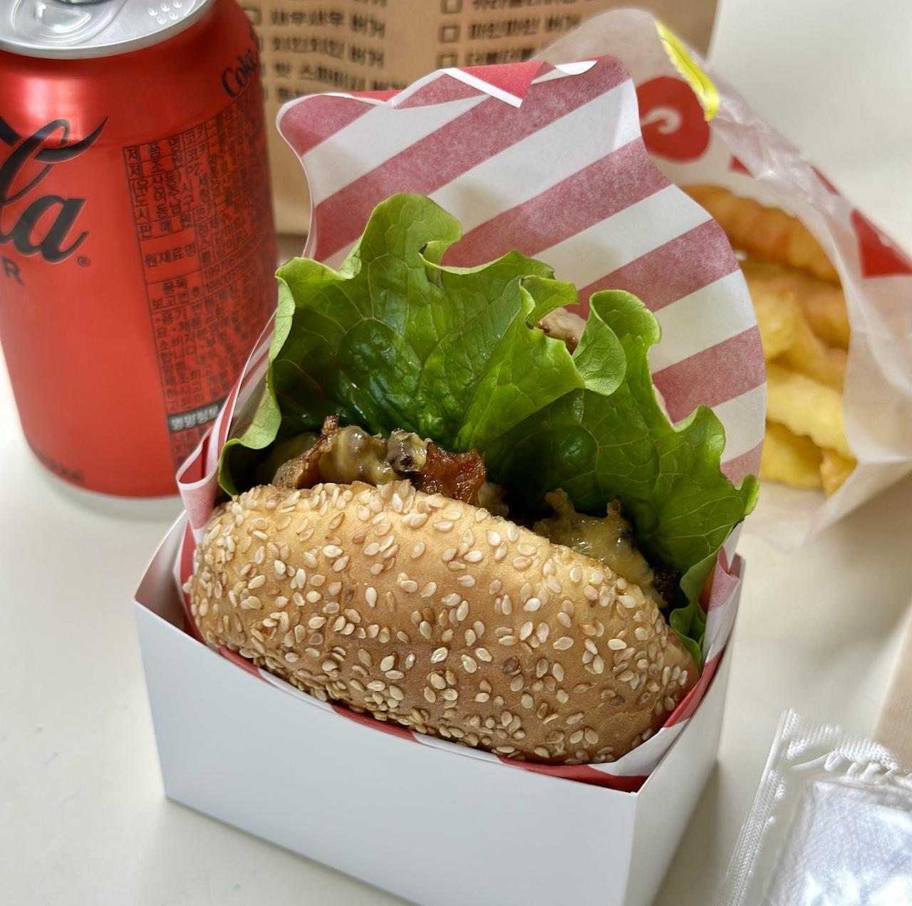

왓더버거의 달콤한 왓더버거 세트와 왓더봉에 관한 기록
햄버거덕으로써 주변의 수제버거 집은 전부 맛을 보는게 인지상정이라고 생각하며 사는 와중에 갑자기 종종 시켜먹던 달달한 수제버거가 떠올랐다. 왓더버거라 불리우는 독특한 이름의 가게다. 그 가게를 잊지 않고 다시 주문...을 하려는 건 거짓말이고 마침 할인 메뉴를 내놨다는 것을 알게 되었을 뿐이다.
다시 시켜먹을 명분(?)이 생긴 만큼 여기서 달콤한 왓더버거 세트를 주문했다. 다만 최소 주문 가격에 미달해서 왓더봉을 추가했지만 말이다.
배달은 굉장히 빠르게 도착했다. 요즘 배달이 늦어지는 경우가 거의 없는 건 좋은 것 같지만 불경기 때문인가 싶어서 좀 미묘하기는 하다.
어쨌거나 포장을 풀었다.
왓더버거의 달콤한 왓더버거 세트와 왓더봉
 이번에 주문한 메뉴인데 실수로 왓더봉을 빼먹고 찍었다.
사진을 찍을 때 왓더봉이 뒤의 봉지에 들어있는 상태로 잊어먹고 사진을 찍어버렸다. 사진을 다시 찍고 싶었지만 이미 뱃속에 들어간 녀석들을 끄집어 내어봤자 이미 위산과 장액에 녹아서 정체를 알 수 없는 역겨운 그 무엇인가(?)가 되었을테니 어쩔 수 없이 이대로 쓴다.
그런데 번이 이게 뭐냐! 분명 아름다웠을 번이 상당히 찌그러진 채로 배달이 되었다. 푹신하고 아름다운 번을 좋아하는 입장에선 상당한 감점이 있을 만한 사유다. 하지만 이번에는 배달의 문제도 있었던 것으로 유추되기 때문에 그냥 넘어가기로 했다. 이렇게 자비롭다니 역시 수제버거는 소중하다.
전반적인 맛을 평가하자면 '달달함'으로 정리된다. 그 어떤 수제버거 집에 비해서 확실히 독창적으로 달달함이 잘 느껴지니 말이다. 아주 단 것도 아니고 적당히 중독적인 단맛이다.
내용물은 풍족하게 씹히는 편이다. 역시 야채와 고기 등 여러 내용물이 조화롭게 들어있어야 맛도 좋고 식감도 좋은 것 같다. 번이 찌그러지지만 않았다면 더욱 다양한 식감을 즐길 수 있었을 텐데 좀 아쉽긴 했다.
감자튀김도 괜찮은 편이었다. 두툼하게 썰려있어서 수제로 추측된다. 거기다 배달 온 지 오래 되었지만 바삭함을 유지하고 있었다는 점 등으로 충분한 가산점을 줄 수 있을 것 같다. 간도 살짝 되어있었지만 케찹을 부르기는 하는 수준이었다.
왓더봉은 치킨 봉 부위이긴 한데 일반적인 치킨과 비교하면 봉 주변 살이 더 많이 붙은 느낌이다. KFC 느낌이 나면서도 튀김옷의 식감은 좀 더 한국식에 가깝게 라이트하면서도 바삭한 편이다. 맛은 간이 어느정도 되어 있으면서도 칼칼할 정도로 매운 맛이었다. 굳이 더 매운 맛으로 시킬 필요는 없을 것 같다.
결론: 일단은 긍정적
역시나 맛 만큼은 실망시키지 않았다.
자주 사먹었던 곳인 만큼 잘 알고 있었음에도 이번에도 맛 만큼은 만족스러웠다. 그저 다음 번엔 번이 찌그러지지 않고 왔으면 좋겠다는 생각 뿐이다.
최근들어 주변의 수제버거 가게가 점점 사라지고 있는 추세에 그나마 이 가게만은 꽤나 오래 남아있다는 점에 위안을 받고는 있지만, 빨리 불경기가 해소되고 많은 수제버거 가게가 생겨나 서로 경쟁 좀 해줬으면 좋겠다는 바램으로 글을 마무리 한다.